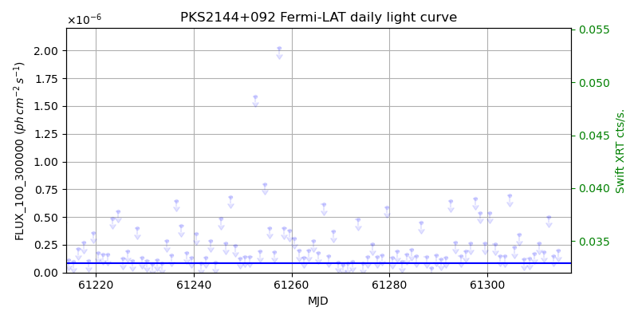
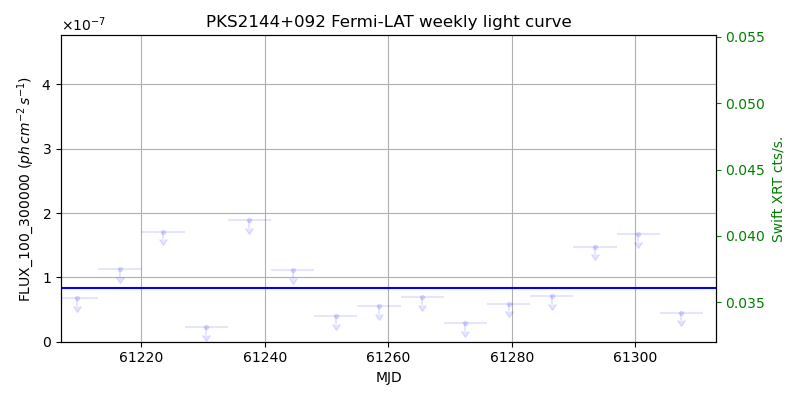
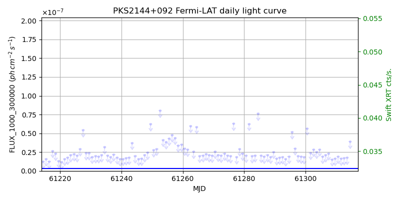
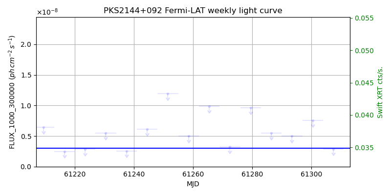

LAT Lightcurve site: https://fermi.gsfc.nasa.gov/ssc/data/access/lat/msl_lc/source/PKS_2144p092
Swift site: https://www.swift.psu.edu/monitoring/source.php?source=PKS2144+092
NED: Query
Time of last update of this page: UT: 2026-10-02 15:29 (MJD: 61315.645)
| Property | Value |
|---|---|
| R.A. | 21:47:10.08 |
| Dec. | 9:29:45.6 |
| z | 1.113 |
| 3FGL SpectrumType | LogParabola |
| 3FGL PL Index | |
| 3FGL Flux_100_300000 | 8.37e-08 1 / (s cm2) |
| 3FGL Flux_1000_300000 | 3.03e-09 1 / (s cm2) |
| 3FGL Flux >200 GeV | 1.45e-13 1 / (s cm2) |
| 3FGL Extrap. Crab >200 GeV | 0.00 |
| 3FGL Flux After EBL Absorption >200GeV | 1.90e-15 1 / (s cm2) |
| 3FGL EBL Crab Fraction >200GeV | 0.00 |

| MJD | dMJD | Flux | dFlux | Frac3FGL | FracCrab>200GeV | EBLFracCrab>200GeV |
|---|---|---|---|---|---|---|
| 61310.50 | 0.50 | 2.62e-07 | 0.00e+00 | 0.00 | 0.00 | 0.00 |
| 61311.50 | 0.50 | 1.88e-07 | 0.00e+00 | 0.00 | 0.00 | 0.00 |
| 61312.50 | 0.50 | 5.03e-07 | 0.00e+00 | 0.00 | 0.00 | 0.00 |
| 61313.50 | 0.50 | 1.52e-07 | 0.00e+00 | 0.00 | 0.00 | 0.00 |
| 61314.50 | 0.50 | 1.98e-07 | 0.00e+00 | 0.00 | 0.00 | 0.00 |

| MJD | dMJD | Flux | dFlux | Frac3FGL | FracCrab>200GeV | EBLFracCrab>200GeV |
|---|---|---|---|---|---|---|
| 61279.50 | 3.50 | 5.93e-08 | 0.00e+00 | 0.00 | 0.00 | 0.00 |
| 61286.50 | 3.50 | 7.09e-08 | 0.00e+00 | 0.00 | 0.00 | 0.00 |
| 61293.50 | 3.50 | 1.48e-07 | 0.00e+00 | 0.00 | 0.00 | 0.00 |
| 61300.50 | 3.50 | 1.67e-07 | 0.00e+00 | 0.00 | 0.00 | 0.00 |
| 61307.50 | 3.50 | 4.54e-08 | 0.00e+00 | 0.00 | 0.00 | 0.00 |

| MJD | dMJD | Flux | dFlux | Frac3FGL | FracCrab>200GeV | EBLFracCrab>200GeV |
|---|---|---|---|---|---|---|
| 61310.50 | 0.50 | 1.90e-08 | 0.00e+00 | 0.00 | 0.00 | 0.00 |
| 61311.50 | 0.50 | 1.64e-08 | 0.00e+00 | 0.00 | 0.00 | 0.00 |
| 61312.50 | 0.50 | 1.70e-08 | 0.00e+00 | 0.00 | 0.00 | 0.00 |
| 61313.50 | 0.50 | 1.76e-08 | 0.00e+00 | 0.00 | 0.00 | 0.00 |
| 61314.50 | 0.50 | 3.92e-08 | 0.00e+00 | 0.00 | 0.00 | 0.00 |

| MJD | dMJD | Flux | dFlux | Frac3FGL | FracCrab>200GeV | EBLFracCrab>200GeV |
|---|---|---|---|---|---|---|
| 61279.50 | 3.50 | 9.63e-09 | 0.00e+00 | 0.00 | 0.00 | 0.00 |
| 61286.50 | 3.50 | 5.47e-09 | 0.00e+00 | 0.00 | 0.00 | 0.00 |
| 61293.50 | 3.50 | 5.01e-09 | 0.00e+00 | 0.00 | 0.00 | 0.00 |
| 61300.50 | 3.50 | 7.55e-09 | 0.00e+00 | 0.00 | 0.00 | 0.00 |
| 61307.50 | 3.50 | 2.88e-09 | 0.00e+00 | 0.00 | 0.00 | 0.00 |
--------------------------------------------------------- Using user-supplied coords: 21:47:10.08 9:29:45.6 2000 --------------------------------------------------------- FLWO UT night of: 2026-10-03 Local Sid. @ Midnight: 00:24 Sunset (-15.0) (local, UT): 19:14 02:14 Sunrise (-15.0) (local, UT): 05:12 12:12 Moonrise (local, UT): 22:48 05:48 Moonset (local, UT): Moon phase: 0.53 --------------------------------------------------------- AzTime LSID UT Obj_el Obj_az Mn_el Mn_az Sep. --------------------------------------------------------- 19:14 19:37 02:14 52.5 118.7 -28.5 20.1 117.3 19:44 20:07 02:44 57.8 127.7 -26.2 26.7 117.7 20:14 20:37 03:14 62.5 139.4 -23.2 32.8 118.0 20:44 21:07 03:44 66.0 154.5 -19.6 38.5 118.4 21:14 21:37 04:14 67.8 172.9 -15.7 43.6 118.7 21:44 22:07 04:44 67.5 192.4 -11.3 48.4 119.0 22:14 22:37 05:14 65.2 210.0 -6.5 52.7 119.3 22:44 23:07 05:44 61.3 224.1 -0.8 56.7 119.6 23:14 23:37 06:14 56.4 235.0 3.8 60.4 119.8 23:44 00:07 06:44 50.9 243.4 9.1 63.9 120.1 00:14 00:38 07:14 45.0 250.1 14.6 67.1 120.3 00:44 01:08 07:44 38.9 255.8 20.3 70.2 120.6 01:14 01:38 08:14 32.7 260.7 26.1 73.1 120.8 01:44 02:08 08:44 26.3 265.1 32.1 76.0 121.0 02:14 02:38 09:14 19.9 269.2 38.1 78.8 121.2 02:44 03:08 09:44 13.6 273.1 44.2 81.7 121.4 03:14 03:38 10:14 7.2 276.9 50.3 84.8 121.6 03:44 04:08 10:44 1.2 280.8 56.5 88.1 121.8 04:14 04:38 11:14 -5.1 284.8 62.7 91.9 122.0 04:44 05:08 11:44 -11.6 289.1 68.9 96.9 122.1 05:12 05:37 12:12 -17.2 293.4 74.7 103.8 122.3 --------------------------------------------------------- Dark hours >55 deg.: 3.34 srcstart (UT): 2026-10-03 02:27 srcend (UT): 2026-10-03 05:48